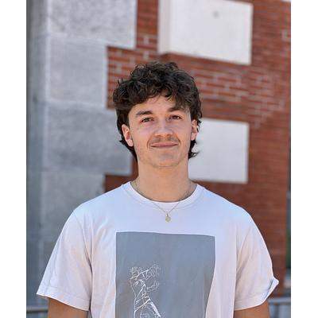

Léo Bruneau
M.Sc. Data Science student at EPFL, researching robust reinforcement learning agents. Lausanne, Switzerland.
About
I am a Data Science master's student at EPFL, specializing in neuroscience. Since 2024 I have worked at the Mathis Lab of Adaptive Intelligence, where I train vision-based RL agents to match mouse behavior and generalize to layouts they have never seen. Before that I ran behavioral experiments with mice and with people, and I studied bioengineering at EPFL.
Interests
Reinforcement learning
World models and training strategies for agents that generalize beyond their training environments.
Computational neuroscience
Comparing artificial agents with animal behavior, and active sensing in mice.
Vision and perception
Temporal dynamics of human visual processing, studied with psychophysics and EEG.
Language models
Fine-tuning, retrieval and tool-calling agents built on open models.
Music cognition
Tonal organization and harmonic tension, modeled from annotated scores.
Experience
- I adapt world-model methods from recent literature to train vision-based agents that match mouse behavior from our published data and generalize to unseen layouts. Target venue is ICML 2027.
- I modularized the training code for RL agents in Unity environments, containerized it with Docker and maintain its tests and documentation.
- I trained 10 mice on a new augmented-reality setup to study adaptive motor control. The work appeared in Current Biology, where I am second author.
- I designed experimental paradigms and visual stimuli to study the temporal dynamics of visual processing.
- I ran behavioral and EEG experiments with more than 70 participants. Two second-author papers came out of this work.
- I led weekly sessions for more than 100 students in Computer Science Fundamentals, Object-Oriented Programming (C++) and Electromagnetism.
- I graded exams and reviewed more than 10 final programming projects each year.
- I trained a self-organizing map on 18 Mozart piano sonatas to map chord affinities and tonal organization.
- I built score-parsing and media-generation pipelines for the open-source
ms3package.
Publications
- C. Benquet, T. Sainsbury, L. Bruneau, … M. W. Mathis. Visual uncertainty and task demands shape active sensing strategies in mice. Current Biology 36(14), 2026.
- M. Morea, L. Bruneau, M. H. Herzog. Grouping comes before seeing. Temporal dynamics of visual processing. Journal of Vision, submitted.
- M. Morea, L. Bruneau, M. H. Herzog, D. Pascucci. Object representations persist to shape future perception. In preparation.
Awards
First of 28 teams in a competition that banned deep learning. Our pipeline found, segmented, classified and counted chocolates in natural scenes using template-matching heat maps, blob detection and an SVM. It reached 74% accuracy on the private test set, 18 points above second place.
We built a web dashboard where non-technical users ask a locally hosted Llama model to analyze satellite images. The model calls plotting and analysis functions and a YOLO detector, then returns the results in the chat. We presented it to Vitol's core development team.
Education
Skills
- Programming
- Python, C++, C#, JavaScript, MATLAB
- Machine learning
- PyTorch, CleanRL, Gymnasium, Hugging Face (Transformers, PEFT, TRL), FAISS, scikit-learn, pandas
- Tools
- Docker, Apptainer, Git, SLURM, Kubernetes, Weights & Biases, Unity
- Languages
- French and Italian (native), English (C1)